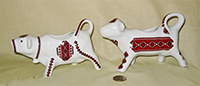
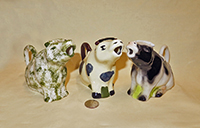

Places of Origin
Like most other things these days, the majority of ‘new’ cow creamers, pitchers, and teapots are “Made in China”, irrespective of the brand or designer. For a while of course Japan had much the same market influence and a good many are still manufactured there, for companies from many countries. I’ve included most of those Chinese and Japanese items in the other categories since the place of manufacture is not all that important, albeit some of the ones that seem to bear a unique flavor of Japan or China, and bear no attribution to a ‘foreign’ designer, are included here.
As with my other categories, this one is neither ‘pure’ nor complete. I have put creamers that come from or are attributed to geographic areas (or types of clay or glaze) that are particularly important for my collection such as “Bennington”, “Staffordshire”, “Jackfield”, and “Delft” in their own separate categories. Some other country-specific creamers are covered under ‘favorite brands', e.g. Kent (England) or Schafer and Vater (Germany). I have completely left the US out of this country-oriented compendium since I’ve integrated the American folk-art and US-manufactured ones into other parts of the collection. Here I try to give examples of creamers that seem to me to be characteristic of their country or region, or for which I have only a few.
As a reminder, click on any thumbnail for a larger picture.
 |
Canada: I have bought many creamers in and from Canada, but know of few that were made there. Here are three Canadian-made creamers from McMaster Pottery which was founded by Ohio-born potter Harry McMaster and his son Robert in 1939 in Dundas, Ontario (it and other McMaster enterprises are now part of the MMG Group). The dark brown one with red drippings in the glaze is particularly interesting because it’s made from red clay, is a souvenir from Ft Macleod, Alberta (just an hour’s drive eat of the Rockies), and still bears the red and gold “McMaster Craft” stamp on its rump. |
||||||||||||||||
|  |
These two creamers reflect the Ukranian heritage of many of the settlers in central Canada –They are from quite standard molds and may not have been initially made in Canada but were almost certainly decorated there. They bear Ukranian decorations from (l) Ceramic Cottage Vegreville, Alberta, and (rt) Diana May Clay, Ltd of Saskatchewan. |
||||||||||||||||
 |
From the seller and Wikipedia we learn that n 1950 21 year-old Dennis Tupy left his native Czechoslovakia and heaed to Halifax. He ended up in Collingwood, Ontario, Canada. With the help of Jozo Weider (a fellow Czech), founder of a ski resort on the slopes of Blue Mountain in Collingwood, in the fall of 1953 he launched the Blue Mountain Pottery. Originally producing hand-painted ski motifs on purchased blanks, production of red clay items like this creamer started in 1953-1954. The pottery went on to produce various types of pottery, from animal figurines to jugs, pots and vases. Blue Mountain Pottery items feature a unique, trademarked glazing process known as "reflowing decorating." Two different liquid glazes, one light and one dark in color, were applied. During the firing process the glazes would run, creating streaking patterns unique to each piece. In 2004, foreign competition and changing tastes led to Blue Mountain pottery's closure, although its pottery is widely collected and has spawned a Collectors Club. This creamer celebrates Timmins, located in NE Ontario, noted for its lumbering and mining industries. |
||||||||||||||||
| England:While as noted on the history page cow creamers per se may have originated in Holland, their popularity and profusion really blossomed in England, so the UK in many ways can claim to be ‘home’ to them. My collection has hundreds of modern British ones in addition to the silver and “Staffordshire” ones, and many of those come from potteries in and around the historic Staffordshire city of Stoke-on-Trent. As noted in the Staffordshire section, this city comprises six distinct towns: Tunstall, Burslem, Hanley, Stoke, Fenton and Longton – which due to the predominance of this industry are collectively known as “The Potteries”. Indeed the Stoke-on-Trent website is www.thepotteries.org and in addition to some fascinating information about the area and its history, has a wealth of information about English pottery in general and more specifically about the 1500 or so potters and their firms who have worked in the area since the early 1700s, plus a ‘features’ section that details the history of a number of them. Many of these firms have changed names, gone out of business, been bought or combined, etc, over the course of the last three-plus centuries, and the consolidation and loss continue to this day. So, here are just a couple examples, of creamers from molds that have been used by many different potteries. Some more idiosyncratic ones are on the Favorite Brands page, and scattered through many of the other themes. | |||||||||||||||||
 |
Here are three different versions that have been produced by quite a few potteries. The one on the left is marked for Burleigh ware, the middle one for Wood Potters of Burslem, and the big flow-blue one for Royal Crownford. I have perhaps a half dozen or more of each mold, from different makers, but these three each have their own story which is perhaps worth a short introduction here. One of the very few older firms still running under family (albeit a different family) ownership - and in the same location at the Middleport Pottery since 1888 - is Burleigh Dorling & Leigh, now trading as Burleigh, see www.bureleigh.co.uk. This firm began as Hulme & Booth in 1851, and in 1862 was taken over by William Leigh and Frederick Rathbone Burgess (thus Burgess and Leigh, thus Burleigh). It came totally under the Leigh family in 1919. They build up an export network that thrived until a ‘run of financial difficulty’ in 1999 led to the sale to the Dorling family, who now run the business. The web site claims that they’re the last working Victorian pottery factory in England. They pride themselves on their blue and white china, and note that they “use ball clay from Devon; china clay from Cornwall and the unique skilled decorating process of underglaze transfer printing.” Royal Crownford is one of the trade names of J H Weatherby & Sons Ltd, whose firm was founded in Tunstall in 1891 and moved to the Falcon Pottery in Hanley the following year, finally closing in April 2000. Its other brands included J H W and Sons, Weatherby, and Falconware. The potteries web site traces the history of various Woods enterprises. Their story begins in the mid 1700s with three brothers – Ralph who’s best known for Toby Jugs, Aaron who was the finest mould maker in Staffordshire, and Moses. Wood & Sons prospered under members of the family until the recession of the late 1970’s, then under a receivership was acquired by the Yorke family in 1982. Wood & Sons called in the receivers in 2005. Other Wood enterprises included that of Arthur whose Bradwell Works in Longport operated from 1904 to 1928 and from then until 1989 traded as Arthur Wood & Sons Ltd, when it was acquired by Price and Kensington. They are both now part of the Rayware Group. Another Wood, Tony, a 9th generation direct descendent of Ralph, operated his Tony Wood Studios from 1980 till ~1991. |
||||||||||||||||
|  | Here is another example of a popular mold used by many potteries. The greenish cow on the left is stamped Bernadette Eve, England, Handcrafted Fine Staffordshire Ironware; the one in the middle is unmarked, and the one on the right is from Tony Wood Studio, England. | ||||||||||||||||
|
|
Germany: There are a number of very fine German porcelain and ceramics factories who have made some superb cow creamers - notably Goebel, Royal Bayreuth, and Schafer and Vater - which figure prominently in my collection and are covered under their own or other headings. In addition, there seem to be quite a few other makers who have produced some lovely examples such as those shown here. Many of these are porcelain and many of them have “Germany” and a mold number inscribed on the lower side of their belly, but none have a maker's mark. In addition to those shown here, most of the nicer early ‘souvenir picture’ creamers in the Advertising and Souvenirs page are also of German manufacture. Since there were so many active German potteries in the late 19c and early 20c, and since borders changed during those years, I have no way of knowing more precisely who made these or where. | ||||||||||||||||
|
Switzerland: Swiss cow creamers are almost all made as
souvenirs, and come in two flavors – German, Japanese etc molds with Swiss pictures
or decals, and actual Swiss-made but generally caricatures with “Switzerland’
prominently displayed, like this little lady. |
|||||||||||||||||

 Czechoslovakia: These all date from well before the Czech Republic and Slovakia had their 1993 “velvet divorce”. They all bear a red or black colored stamp that is a ½” circle with the words “Made in Czecho-Slovakia” in the middle (and occasionally a number) thus presumably all come from the same factory (that I’d like help identifying!). The sitting-up creamers appear to be the most numerous, and they come in a variety of colors and sizes, from white to brown to orange to polka-dot. I also have a few much more modern cows from the Czech Republic, shown in Modern Variations. |
|||||||||||||||||
|
Poland: The center of Polish pottery is the city of Boleslawiec, ~120km
west of Warsaw, on the Bobr River in SW Poland near the German (Silesia)
border. Pottery making in this area, which is renowned for its white clay,
dates back to around the 7c. Boleslawiec is apparently sort of a Polish
version of Stoke-on-Trent in England (I haven't visited it [yet], so this is
just a guess); at any rate, it has a lot of pottery factories. Brightly
decorated Polish dinnerware from this region seems to be extremely popular
in the US these days; some even showed up at an Alaskan Army base PX we
visited. Using the web as a guide, I find that in the left hand picture,
the cow on the left is from Zaklad Ceramiki Artystycznej "TYRCZ", and the
one on the right is from Zaklad Ceramiczny Stanislaw "WIZA" which is in the
village of Parowa, about 13 km west of Boleslawiec. The smiley creamer in
the center of the left picture, and the one on the left of the right shot,
are most likely from Ceramika Szlachetna "DANA", which was established in
1975 and prides itself on continuing to use only traditional hand-made
techniques; thus each of their pieces is marked "UNIKAT", which means
unique. The little smiley guys with the tiny round mouths are pretty
obviously from the same area, but I don't have their precise pedigree. To learn more about Polish
pottery, Boleslawiec, and the various factories there, check our www.artisanimports.com/Polish_Pottery/About_us.html. |
|||||||||||||||||

Italy: All my Italian creamers, including a couple of silver ones, are quite modern and I believe that most were made for export since the Italians are more into black espresso (and wine) than tea or ‘American’ coffee with cream. There are however some very fine examples about a third of the way down on page 3 of Modern Variations. |
|||||||||||||||||
|
Portugal: My wife and I found most of these lovely creamers during a visit to Lisbon in November 1997; we came home with stuffed suitcases. They are all handmarked, from several different factories. |
|||||||||||||||||
| Spain:These jugs pretty obviously aren't creamers, but rather designed most likely to hold wine. They are traditional "Iberian Bulls", 'recuerdo' or souvenirs from the town of Cuenca. A web blog from a Spanish historian states that they were initially made as family presents, representing the stature and strength of the Spanish or Iberian bull. They became popular and thousands have been sold as tourist items. Their form seems also to have served as the basis for quite a variety of smaller versions, some standing like these and some with cone shaped bodies, desihgned depending on size for wine or as cruets oil and vinegar. More are shown on the Rhytons page. | |||||||||||||||||
 |
Now this definitely is a cow creamer, and distinctively Spanish…stamped and impressed for Sargaledos, which is a fancy ceramics gallery in Barcelona. |
||||||||||||||||
 |
Mexico: This is a particularly fine example of Mexican folk art; I bought it on eBay, and the seller indicated it was made by Guilermina Aguilar of Ocotlan de Morales, Oaxaca. It arrived with the horns broken, but after considerable trouble I had them restored – it was nice enough to justify the effort!. | ||||||||||||||||
 |
Here are two more Mexican clay jugs or pitchers - probably more intended for tourists than any real use. The eBay-seller of the one on the right said he bought it in a crowded market in Nogales, Mexico in 1996, described as patterned after Mayan design. I have a similar black one also. | ||||||||||||||||
|
Not hard to tell where this little black clay cow came from – it has Mexico in large white letters on its tummy. |
|||||||||||||||||
|
Not all Mexican cows are large and made from clay…the country also produces a number of fine ‘regular’ ceramic ones, like this creamer from Céramica Santa Maria in Cuernavaca. There are a couple sets from the same factory in the Sugar and Creamers section. |
|||||||||||||||||
 |
Chile: The large pitcher on the left is stamped “Ceramica San Juan MR” and “Penco-Chile”, and the one on the right “Asem, Chile” in script. | ||||||||||||||||
 |
Brazil: Two red clay wine pots from Brazil. From the number I've seen on ebay they make popular souvenirs. I also have a couple ceramic pitchers and creamers from Brazil | ||||||||||||||||
|
|
Peru: One of the most characteristic modern Peruvian pottery items is the Torito |
||||||||||||||||

In 2007, the Peruvian Ministry of External Commerce and Tourism (MINCETUR) together with a number of business groups sponsored a traveling exhibition called "My Torito of Pucara" in which 40 featured artists decorated Toritos which were ultimately auctioned off to the public at the National Museum to raise funds for handicraft training and technology. I missed that event, but I believe I more than made up for it during an early-2008 visit to Peru by commissioning this 734 gram, .95 silver Torito do Pucara from the Arte Magico Andino Joyeria in Cusco. Virtually all the artisans in their workshop turned to in order to produce this delightful, one of a kind (at least as of now!) 'cow creamer' (yes, it does indeed have 2 holes!) in about 3 days so I could carry him home (and found, much to my delight, that he could enter the US duty-free!). Japan: Here are four Japanese interpretations of the cow creamer – as
noted above there are many “Made in Japan” creamers that were manufactured for designers or
distributors in the US and elsewhere. However these four seem to me to have a uniquely Japanese
flavor, and date from before or just after the end of WWII, or possibly the early ‘50s. |
 These weird looking guys licking their noses are of heavy ceramic, and stamped
“Occupied Japan”. Interestingly, the tongue licking the nose is very similar to |
that of the Peruvian Toritos de Pucara. Makes me wonder if there's any possible connection.  The little guys in front have sort of a mean look, and some of them also bear the
Occupied Japan stamp. Others say just Japan, or Handpainted in Japan. |

|
These three with curly tails are another idiosyncratic interpretation. The two smaller ones have both a stamp, and an unusual impressed mark on the lower part of their side that reads JAPAN.  Both of these lazy but happy cows are marked Made in Japan. |

|
Not all Japanese cows were made for the export market, however. Here is a lovely little hand decorated porcelain teapot that was sold as Meiji, dating from pre-1893. Quite a contrast to the more recent interpretations.
|


China: I bought the creamer (or, rather, teapot) on the left in an antique store in Lisbon, Portugal, where the dealer indicated it was made for the export trade @1880. Its base markings are the ones on the right in the second picture (my inventory #207), and thanks to Paula Airey of the Isle of Wight from whom I bought a more modern copy, I was led to the www.gotheborg.com site of Jan-Erik Nilsson, a treasure house of information on Chinese and Japanese porcelain. Comparing them to the sets of marks found there, they seem similar to those of PIN - "Treasure/Product" mark #384, Qiang Yi Tong/Zhen Cang Pin "Qiang Yi Hall Precious Treasure". The newer teapot (my #237) bears the marks (#114 or 767 in the gotheborg list) of Yi Qian Tang (factory name) and Long Nian Zhi (Made in the year of the Dragon) and is likely from the 1980's. These porcelain decoration factories used older blanks from China and Japan, and German enamels, and specialize in products for 'expats'. Although I was very exciited when I got my first one of these, I have since seem quite a number on ebay, albeit all of them are modern versions.
| Australia: I have purchased quite a number of cow creamers and
pitchers both in Australia and from eBay.au, but these two little handmade teapots, from Ron &
Lorrie Holmes-Brown of Queensland, are the only ones I know of that were definitely made there. |
| ||||||||


{kind=link}
{kind=link}
{kind=link}
{kind=link}
{kind=link}
{kind=link}
{kind=link}
{kind=link}
{kind=link}
{kind=link}
{kind=link}
{kind=link}